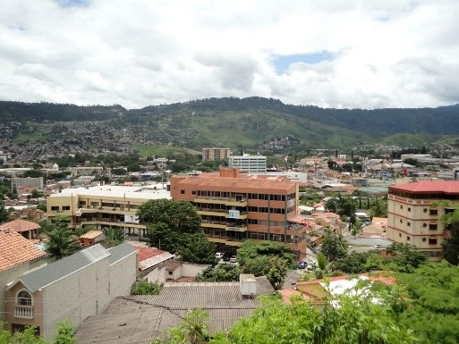
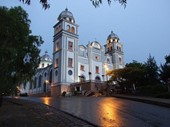

 Tegucigalpa, oficialmente Tegucigalpa, Municipio del Distrito Central y abreviado como Tegucigalpa, M. D. C. es la capital y sede de gobierno de la República de Honduras, junto a su ciudad gemela Comayagüela, según los artículos 8 y 295 de la actual Constitución de Honduras.45 Es una de las ciudades más pobladas de América Central
 Aunque ya desde 1536 se le conocía al pequeño poblado a las orillas de la cuenca del río Choluteca (hoy en día el Centro Histórico) por el peculiar nombre de Taguzgalpa, es con la llegada de los españoles a la región en busca de minerales que se reconoce el 29 de septiembre de 1578 como el día que marca su fundación bajo el nombre de Real de Minas de San Miguel de Tegucigalpa. Tres siglos después, el 30 de octubre de 1880 se convierte en la capital del país, durante la presidencia de Marco Aurelio Soto.
En 1821 fue elevada al rango de ciudad. En 1824, el primer congreso de la República de Honduras decretó que Tegucigalpa y Comayagua, las dos ciudades principales del país, se alternaran como capital del Estado, hasta que el 30 de octubre de 1880 se trasladó la sede del Gobierno definitivamente a la ciudad de Tegucigalpa como capital del Estado, se decretó que residirán en ella autoridades civiles, excepto la Corte Suprema de Justicia que residirá en Comayagua, trasladando de inmediato las oficinas dependientes del Gobierno Supremo.
Desde 1898 se dispuso que Tegucigalpa y Comayagüela, las dos ciudades vecinas, a ambas orillas del Choluteca, formasen la capital, pero manteniendo nombres separados, con dos gobiernos municipales. Contaban, en aquel entonces, con unos 40.000 habitantes y el Distrito Central, incluyendo poblaciones circunvecinas, reunía más de 50.000 almas.